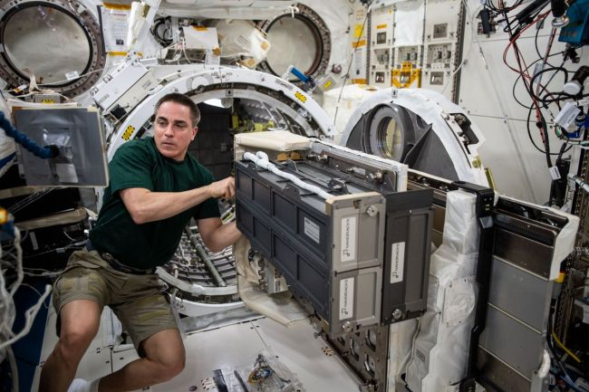
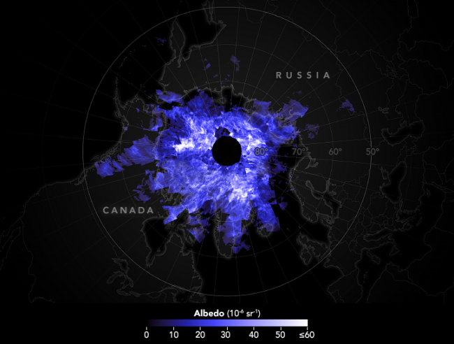
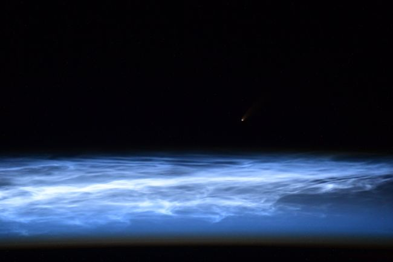
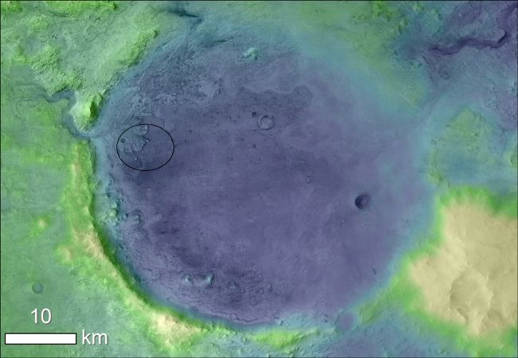
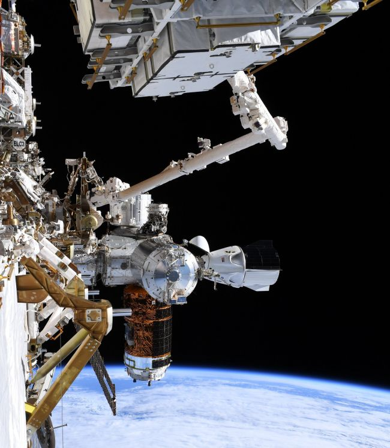
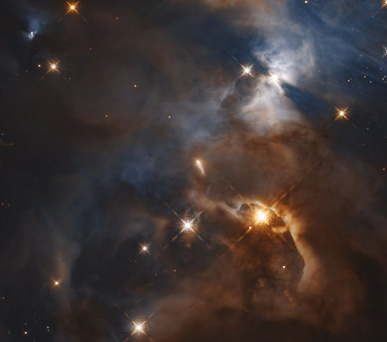
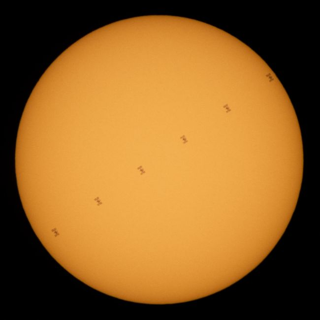
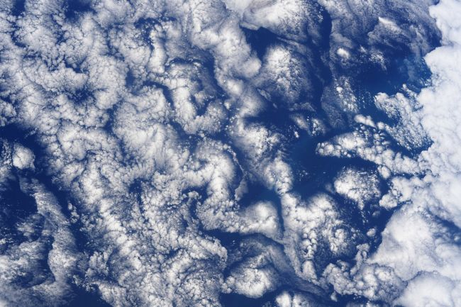

A sparkling sea of galaxies
A sparkling galaxy shines in this image from the NASA/ESA Hubble Space Telescope. The galaxy, known as PGC 29388, glimmers amidst a sea of more distant galaxies. It is a dwarf elliptical galaxy, named as such because it is “small” (relatively speaking) with “only” about 100 million to a few billion stars.
Comet NEOWISE
This images shows the twin tails of Comet NEOWISE, as they appeared on July 5. The image, created by processing data from the WISPR instrument on NASA's Parker Solar Probe, shows a larger comet tail made up of dust and gas and a thin, upper ion tail. The comet came into view this month and skywatchers in the Northern Hemisphere have enjoyed observing the comet.
Solar campfires
The European Space Agency's Solar Orbiter spacecraft swooped by the sun and, with its Extreme Ultraviolet Imager (EUI), took these images of the sun on May 30, 2020. This was the probe's first view of the sun, released today. In these images, you can see the sun's upper atmosphere at a wavelength of 17 nanometers, which is in an extreme part of the ultraviolet region of the electromagnetic spectrum.

Minotaur 4 poised for launch
A Minotaur 4 rocket is scheduled to liftoff today from NASA's Wallops Flight Facility on Wallops Island, Virginia. The mission will launch the secret NROL-129 payload made up of four top secret spy satellites into orbit for the U.S. Space Force.

Science in space
In this photo, taken last week and posted to Twitter July 13, 2020, NASA astronaut Chris Cassidy works on a piece of equipment aboard the International Space Station. In the image, Cassidy works on the equipment, a deployer known as the Nanoracks CubeSat Deployer, on the Japanese Experiment Module slide table.

Electric blue clouds
Electric blue streaks through the upper regions of Earth’s atmosphere every summer in the Northern Hemisphere. They usually swirl above the Arctic in the mesosphere (about 50 miles (80 kilometers) above Earth’s surface), but sometimes they form lower in the atmosphere and show up in other places across the globe.
This image shows an image of noctilucent (or night-shining) clouds on June 23. The image, made using data from NASA’s Aeronomy of Ice in the Mesosphere (AIM) craft, is centered on the North Pole.

Luminous clouds from space
Cosmonaut Ivan Vagner, who is currently on board the International Space Station, snapped this stunning new of luminous clouds on Earth from the station. Luminous clouds are the highest cloud formations in Earth’s atmosphere and they appear at an altitude of 43-59 miles (70-95 kilometers).

A Martian landing site
This elevation map of Jezero Crater on Mars shows the site in a rainbow of colors, with lighter colors representing higher elevation. This Martian crater is the chosen landing site for NASA’s Perseverance rover, previously known as the Mars 2020 rover, which is set to launch to the Red Planet this summer.

A stunning Dragon view
NASA astronaut Chris Cassidy snapped this photo of SpaceX's Crew Dragon vehicle docked with the International Space Station and with Earth's curvature in the background during a spacewalk with Bob Behnken on Friday, June 26, 2020. During this spacewalk, the pair of astronauts swapped out aging nickel-hydrogen batteries with brand new lithium-ion batteries on the space station.

A flapping space bat
In this image taken by the Hubble Space Telescope and released June 25, 2020, you can see the star HBC 672, nicknamed "Bat Shadow." The strange feature got its name because it looks like a large, shadowy wing. But its name has even more meaning as, with new Hubble observations from a team led by Klaus Pontoppidan, an astronomer at the Space Telescope Science Institute (STScI) in Baltimore, Maryland, it appears as if the "bat wings" are "flapping."

A space station solar transit
This composite image shows the International Space Station as it transits in front of the sun. Made up of six different frames taken from Fredericksburg, Virginia, this image shows the space station moving at approximately 5 miles per second on June 24, 2020. Five astronauts are currently onboard the space station, including Expedition 63 NASA astronauts Chris Cassidy, Douglas Hurley and Robert Behnken and Roscosmos cosmonauts Anatoly Ivanishin and Ivan Vagner.

Cloud art from space
Veteran NASA astronaut Doug Hurley, who launched to the International Space Station aboard SpaceX's Crew Dragon craft as part of the company's Demo-2 mission on May 30, snapped this incredible photo from the space station. Hurley's view from space shows striking cloud formations over the South Pacific Ocean. "Cloud art in the South Pacific," Hurley wrote alongside the image which he shared on Twitter.